Chapter 7: Concurrent Code With TaskGroup¶
You’ve made your way through a lot of new concepts so far. At this point, you’re hopefully comfortable with designing code with async/await, creating asynchronous sequences and running tasks in parallel with async let bindings.
async let bindings are a powerful mechanism to help design your asynchronous flow, especially when you have a mix of tasks where some need to run in parallel, while others depend on each other and run sequentially.
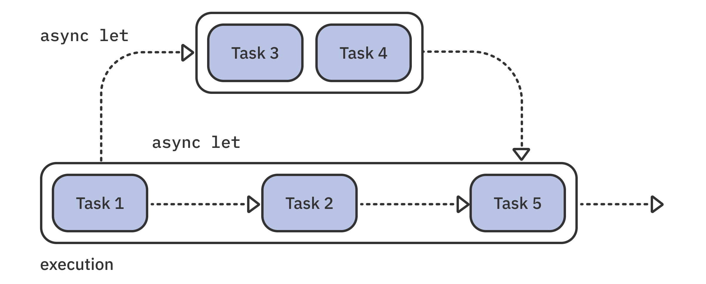
While you have some flexibility to decide how many and which tasks to run with async let, that syntax doesn’t offer truly dynamic concurrency.
Imagine that you need to run a thousand tasks in parallel. Writing async let a thousand times is out of the question! Or what if you don’t know in advance how many tasks you need to run in parallel, so you need to write code that can handle that decision at runtime?
Luckily, there’s a solution: meet TaskGroup, the modern API that allows you to create dynamic concurrency in your code. TaskGroup is an elegant API that allows you to create concurrency on the fly, reduces the possibility of data races and lets you safely process the results.
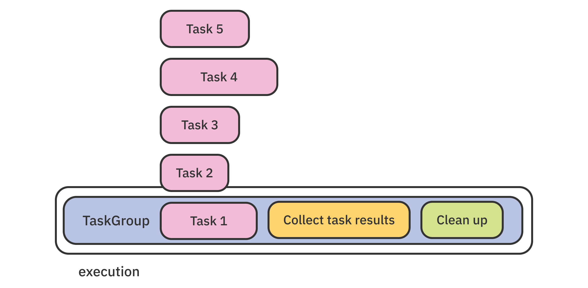
Introducing TaskGroup¶
As in previous chapters, you’ll start by reading a short overview of the APIs you’ll try. You’ll then move on to working on a brand new, aliens-related project!
There are two API variants used to construct a task group: TaskGroup and ThrowingTaskGroup. Like other APIs you’ve covered in this book, these two variants are almost identical. The difference is that the latter allows for throwing tasks.
You don’t initialize a task group yourself — as both APIs don’t offer public initializers. Instead, you use one of the following handy generic functions, which creates a group for you and assists the compiler in properly type checking your code:
- withTaskGroup(of:returning:body:): Creates a group with the given task return type, the given return type for the final result you’ll construct from tasks in the group, and the
bodyclosure as the code that initializes and runs the group. - withThrowingTaskGroup(of:returning:body:): Takes similar parameters, but each task, as well as the group as a whole, might throw an error.
An important point about these functions is that they only return once the group finishes running all of its tasks.
Here’s a short example that demonstrates how to use a task group:
//1
let images = try await withThrowingTaskGroup(
of: Data.self
returning: [UIImage].self
) { group in
// 2
for index in 0..<numberOfImages {
let url = baseURL.appendingPathComponent("image\(index).png")
// 3
group.addTask {
// 4
return try await URLSession.shared
.data(from: url, delegate: nil)
.0
}
}
// 5
return try await group.reduce(into: [UIImage]()) { result, data in
if let image = UIImage(data: data) {
result.append(image)
}
}
}
Don’t be put off if the code doesn’t speak to you at first. Like most modern concurrency APIs, this example is both your first encounter with TaskGroup and almost everything you need to know about it.
Step by step, this code does the following:
- You set each task’s return type as
Datavia theofargument. The group as a whole will return[UIImage]. You could also have an explicit return type in the closure declaration and skip thereturningargument. - Elsewhere in your code, you’ve calculated the number of images you want to fetch, which lets you loop through them here.
groupis the ready-to-goThrowingTaskGroup. Inside theforloop, you usegroup.addTask { ... }to add tasks to the group.- You perform the actual work of the task by fetching data from an API.
- Task groups conform to your old friend
AsyncSequence, so as each task in the group completes, you collect the results into an array of images and return it.
Long story short, the example starts a variable number of concurrent tasks, and each one downloads an image. Finally, you assign the array with all the images to images. Those few lines of code really pack quite a punch!
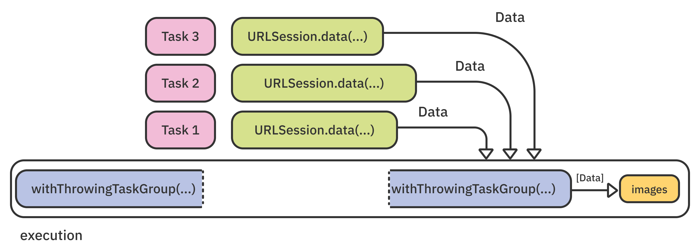
You manage the group’s tasks with the following APIs:
- addTask(priority:operation:): Adds a task to the group for concurrent execution with the given (optional) priority.
- addTaskUnlessCancelled(priority:operation:): Identical to
addTask(...), except that it does nothing if the group is already canceled. - cancelAll(): Cancels the group. In other words, it cancels all currently running tasks, along with all tasks added in the future.
- isCancelled: Returns
trueif the group is canceled. - isEmpty: Returns
trueif the group has completed all its tasks, or has no tasks to begin with. - waitForAll(): Waits until all tasks have completed. Use it when you need to execute some code after finishing the group’s work.
As you see, TaskGroup conforms to AsyncSequence, so you can iterate over the group asynchronously to get the task return values, just like a regular Swift Sequence.
This is quite an ingenious design because it both runs concurrent tasks and iterates over the results as a sequence — and, therefore, in a non-concurrent context. That allows you to update your mutable state safely — for example, by storing the result of each task in an array.
In the next section, you’ll try many of these great APIs in an app that searches for aliens.
Getting started with Sky¶
In this chapter, you’ll work on an iOS app called Sky that scans satellite imagery of the sky and analyzes it for signs of alien life.
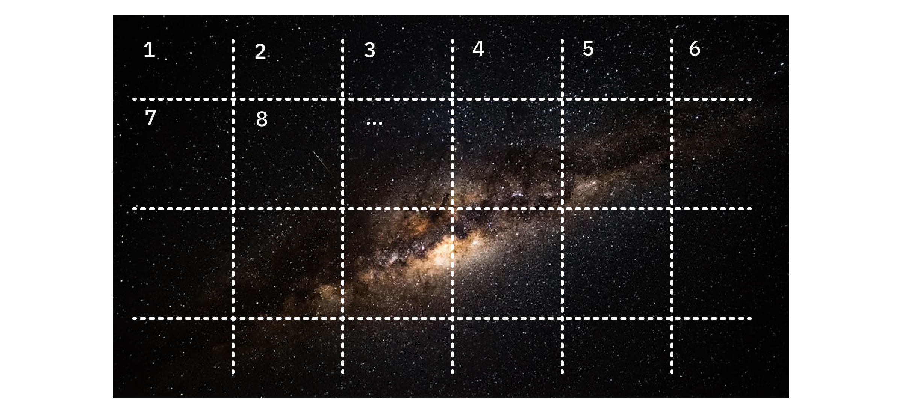
You’ll scan the numbered sectors in a satellite image independently from each other. This allows you to use TaskGroup and perform many of these scans in parallel.
Note: The app will only pretend to scan the images. The goal of this chapter is to walk you through using concurrent task groups. If you’re interested in really searching for alien life, check out The SETI Institute (https://bit.ly/3C4k62y).
As with other projects in the book, Sky consists of a single screen already built for you in SwiftUI. Most of your work will go into the app’s model, which will spawn concurrent tasks and manage their execution.
To get started, open this chapter’s starter project. Then, build and run it. You’ll see the main app UI. It features three indicators that show the scheduled tasks, the current tasks-per-second ratio and the number of completed scans:
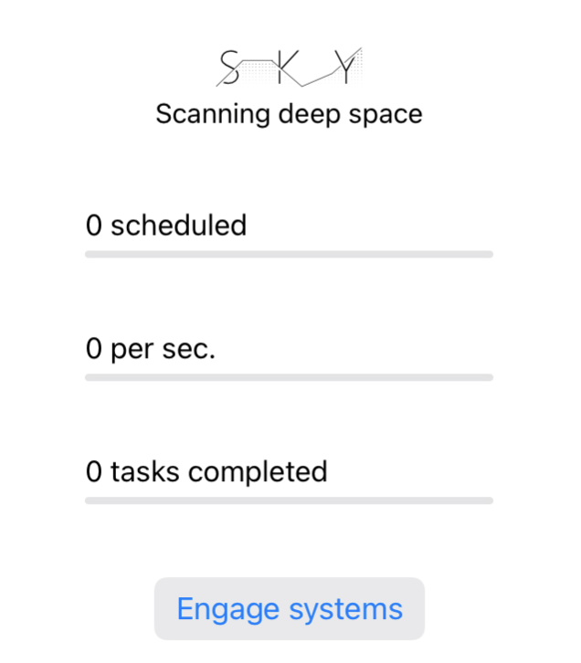
Tap the Engage systems button. The app will pop an alert telling you that it successfully scanned twenty sectors within zero seconds.
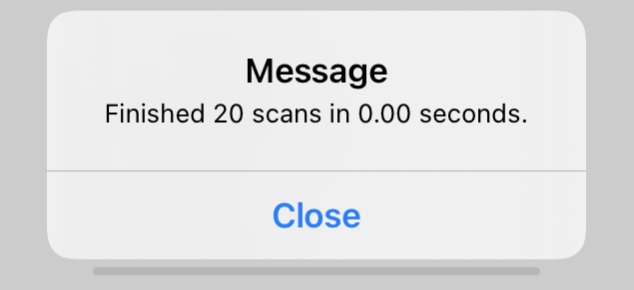
As you’ve already guessed, the app didn’t actually perform anything. The button calls the starter code, but the model doesn’t scan any data. That’s why you get the record 0.00-second duration to complete the work.
The main points to note in the starter code are:
- The
scanModelproperty in Sky/SkyApp.swift is the initialized model. It takes the number of tasks to perform in a single run and the name of the local device. You’ll use that name in a later chapter. - In Sky/ScanModel.swift, the three
@Publishedproperties that drive your UI arescheduled,countPerSecondandcompleted.onScheduled()andonTaskCompleted(), which you’ll call from your own code later, manage those properties. - Finally, peek in Sky/Tasks/ScanTask.swift. This is the type that “performs” a sky-sector scan. It takes an
input, which is the number of the sector, and performs the actual work inrun(). Luckily for your computer,run()only simulates hard work by blocking its thread for one second.
Now that you’ve had a quick walkthrough of the project, you’ll move on to implementing the part of the model that runs the scans.
Spawning tasks in a simple loop¶
Open ScanModel.swift and add the following convenience method anywhere inside the ScanModel class:
func worker(number: Int) async -> String {
await onScheduled()
let task = ScanTask(input: number)
let result = await task.run()
await onTaskCompleted()
return result
}
This method not only runs a single task, but also tracks the execution in the model’s state. Here’s what this code does:
- Call
onScheduled()to update the model counters. This method is annotated with@MainActorbecause it updates the UI. Updating the UI should always be a fast operation, so the await here won’t affect the progress of the scanning task significantly. - Create a new
ScanTaskwith the given sector number. - Wait for the results of the asynchronous call to
run(). - Finally, call
onTaskCompleted()to update the model counters and the app’s UI on the main thread once again.
onScheduled() and onTaskCompleted() are both annotated with @MainActor to guarantee that updating the model counters, even from multiple copies of worker(number:) running in parallel, is safe.
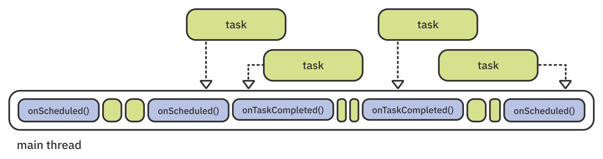
Next, scroll to runAllTasks(). The Engage systems button calls this method when you tap it. You’ll add the code to perform concurrent scans here.
Now, add this code inside runAllTasks(). If you see a problem with the code, congratulate yourself, but indulge me and use it anyway:
var scans: [String] = []
for number in 0..<total {
scans.append(await worker(number: number))
}
print(scans)
Here, you create an empty array called scans, then run a for loop to append the result of each scan task. Finally, you print the result to the console.
Build and run. Tap Engage systems; the indicators will liven up.
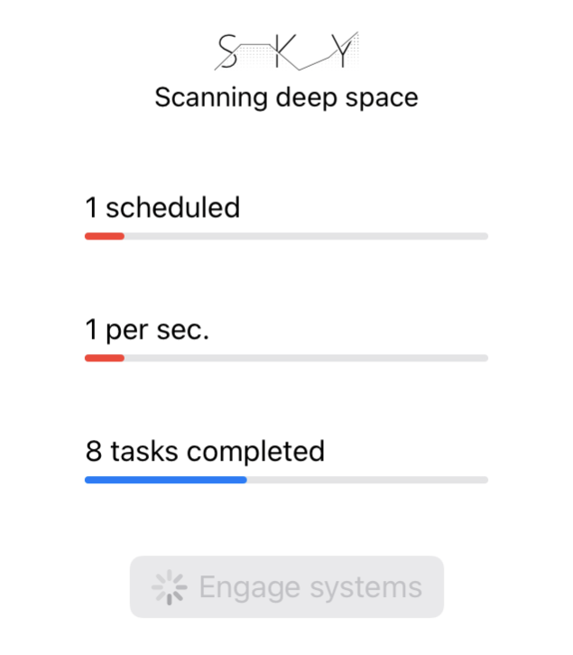
As the app progresses, you’ll notice that there’s always one scheduled task, and you’re progressing at about one task per second.
If you’ve already noticed the flaw, this won’t surprise you. You await the tasks serially inside the for loop instead of running in parallel. Finally, when the scan completes, the app shows a duration of just over twenty seconds.
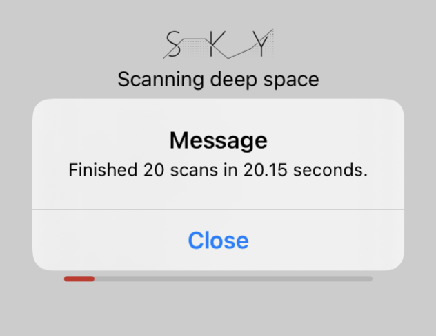
Each call to worker(number:) blocks the next one, regardless of whether the dispatcher uses one or more threads:
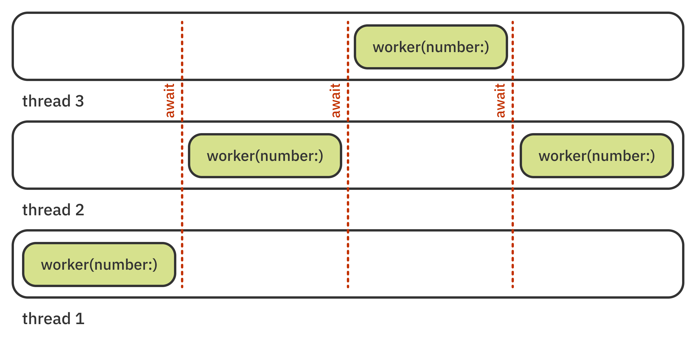
You need to work on multiple threads at the same time to perform concurrent work. You could do that manually by wrapping the code inside the loop in a Task. This would start all iterations immediately and at the same time.
But fear not, there’s no need for manual labor. That’s what the TaskGroup APIs do for you: launch tasks concurrently, track execution and, finally, collect the results.
Creating a concurrent task group¶
Inside runAllTasks(), delete everything except the first line that resets started. Insert this instead:
await withTaskGroup(of: String.self) { [unowned self] group in
}
You use withTaskGroup(of:operation:) to create and run a task group. You also set each of the tasks to return a String. You’ll call worker(number:) from inside the closure, so you capture self as an unowned reference.
Now, you can add some tasks to group by inserting this code in the withTaskGroup(...) closure:
for number in 0..<total {
group.addTask {
await self.worker(number: number)
}
}
Here, you add a for loop like before, but this time you use addTask(priority:operation:) to add a task and swiftly move on to the next iteration of the loop.
Each task in the group calls worker(number:) and returns its result. This happens implicitly because you don’t need to write return for single-line closures. At the moment, you don’t collect the task results, but you will later in this chapter.
Build and run. Tap Engage systems. This time, you see the Scheduled indicator shoot straight up to twenty — and then nothing happens for a while. Finally, the jobs complete.
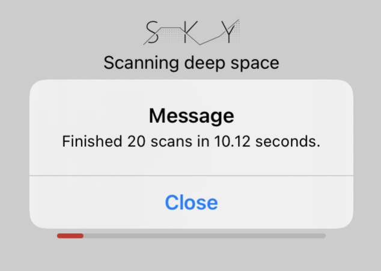
Note: You’ll see a different completion time depending on how many execution threads the system has made available to your app. In the screenshot above, the work finished in about 10 seconds, which means the app used two threads. If you see about 7 seconds, that’s three threads, 5 seconds would be four, and so on. If you still see 20 seconds, you only had one execution thread available to do any work. In that case, try running the project on an iOS device rather than the simulator.
You’ll deal with the lack of UI updates shortly, but something is definitely going right — the time it takes to complete all of the tasks dropped, meaning the app is now working concurrently!
The app has performed twenty seconds of work in ten seconds of actual time. This is your first hint that you’re doing concurrency right — you’re using more CPU time than the amount of astronomical time that’s passed.
The duration is 50% shorter, and that means that the Swift runtime allotted two execution threads at a time from the thread-pool to your task group like so:
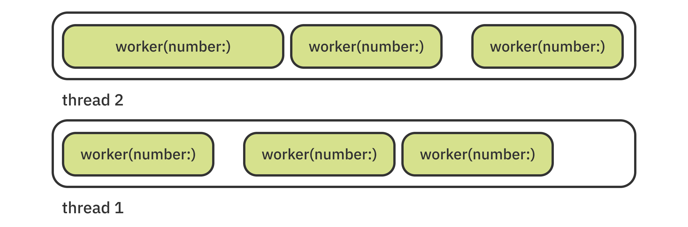
Because addTask(...) returns immediately, all twenty tasks are scheduled instantly, before the tasks start. The runtime then starts all the tasks, so the Scheduled indicator fills all the way up. Then, things start to go wrong. The work is being done, and being done concurrently, but you don’t see any UI updates. Why is that?
Controlling task execution¶
Remember that the concurrency system breaks operations down into partials. Resuming after an await is a partial, just like anything else. After the first ScanTask.run() completes, the concurrency system now has to choose between running a different scheduled scan task or resuming any of the completed ones.
Note: If you need a quick refresher on partial tasks in Swift, take a moment to review the section called “Separating code into partial tasks” in Chapter 2, “Getting Started With async/await”.
You haven’t given the system any information about which option is more important, so it’s doing what you asked it to do first — running the scans.
Your users are anxious for news of alien life! To make the concurrency system understand this, you need to tell it that scanning tasks are less important than updating the UI.
Open Sky/Tasks/ScanTask.swift and update run() to give the task a priority.
Replace:
await Task {
With:
await Task(priority: .medium) {
If you don’t set a priority, the task will get the priority of its parent. In this case, that priority is .userInitiated because the original task started from the main thread.
With this change, you give the scanning task a lower priority — medium, in this case. That means the scheduler should (priorities are only suggestions) favor resuming after a completed scan over beginning the next one. Since UI updates are super quick, this won’t keep you from the aliens for too long.
Keep in mind that changing the priority here will not make tasks run faster or slower. It just bumps the UI tasks toward the front of the executor queue instead of appending them after all of the scan tasks.
Build and run. Tap Engage systems. Now, you’ll see the completed progress fill up in real time:
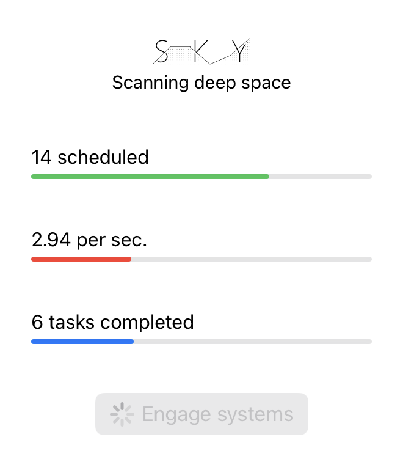
With that wrinkle out of the way, you can return to figuring out if you found any alien life during this particular scan.
Getting results from a task group¶
An important detail to note about withTaskGroup is that it waits for all tasks to finish before returning. That means that, on the next line of code after calling this function, it’s safe to assume all the tasks have completed.
“But where is the result of the group execution?” you might ask. Since you don’t explicitly return a value from withTaskGroup(...)’s trailing closure, the function returns no value (i.e., Void).
As you briefly touched upon earlier in the chapter, TaskGroup and ThrowingTaskGroup expose their results via an AsyncSequence conformance. In other words, you can use everything you already know about asynchronous sequences to iterate over the task results in group.
Open ScanModel.swift and scroll to runAllTasks(). At the end of the task group closure, after the for loop, add the following code:
return await group
.reduce(into: [String]()) { result, string in
result.append(string)
}
You use reduce(into:block:), inherited from AsyncSequence, to collect all the returned task values and collect them in an array.
The compiler will promptly complain about this change. To fix that, update the line that creates the task group to add a closure return type and assign the result to a local variable, like so:
let scans = await withTaskGroup(
of: String.self
) { [unowned self] group -> [String] in
This will clear the compiler error and also assign the group result to scans. To verify the group results, add the following at the end of the runAllTasks() method:
print(scans)
Build and run one more time. Tap Engage systems and, once the scanning completes, look at Xcode’s output console. You’ll see the values returned by the group:
["1", "0", "2", "3", "4", "5", "6", "7", "9", "10", "8", "11", "13", "12", "15", "14", "16", "17", "18", "19"]
Note how the numbers aren’t sorted in increasing order. TaskGroup executes tasks in the order it finds fitting to optimize system resources.
Additionally, tasks with higher priority will execute before tasks with lower priority, regardless of the order you add them.
Mutating shared state¶
A final point to make about using task groups is that it’s quite important to understand which parts of your code actually run in parallel.
By design, you can return any results of the concurrent execution from the task and safely collect those results by iterating over the group. However, sometimes you need to update some kind of shared state directly from inside a group task.
For example, concurrent tasks that download a file from a server might log the result immediately via a shared app logger object. This way, if one of the files fails to download and the request throws an error, the rest of the requests will still log successfully as soon as they get the file:
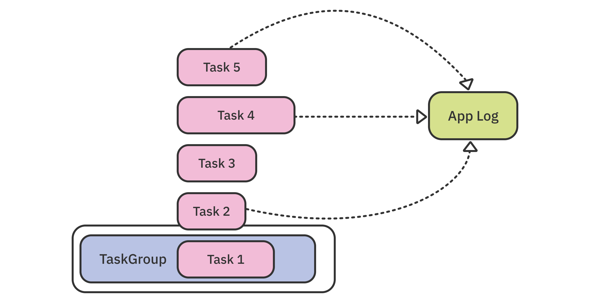
If you end up mutating shared state — like an instance property or a top-level variable — concurrently, you’ll create a data race that might eventually crash your app. A data race occurs when multiple threads access the same data in memory, and at least one of them is trying to modify that data:
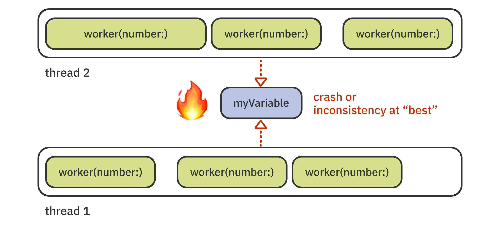
The tricky part about data races is that you almost never experience a crash when you run your app in debug mode from Xcode. Data races most often produce crashes when you compile an app to release and run it on a device. And as luck has it, it’s bound to happen more often to your end users than to you as a developer.
Long story short, you need to be vigilant about which parts of your task group code run concurrently and avoid modifying the shared state from within that group. The completed group code roughly splits across concurrent, asynchronous and synchronous execution, like so:
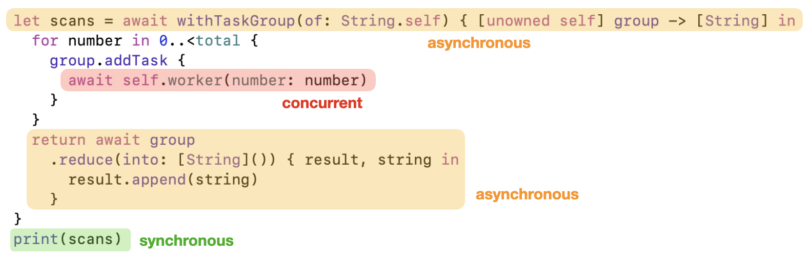
- It’s mostly safe to modify shared state from the synchronous parts of the code (in green) — for example, from outside the task group.
- It’s somewhat safe to modify state from asynchronous parts (in orange), if the compiler doesn’t complain. But to do that, you have to be sure you aren’t introducing a data race.
- It’s dangerous to modify state from the concurrent parts (in red), unless you use a safety mechanism.
Luckily, the new concurrency model also provides a new API to make your concurrent code safe. You’ll learn about it in detail in Chapter 8, “Getting Started With Actors”.
At the moment, your group churns through all its tasks and eventually ends up with a result. But what if you were to actually find alien life? Wouldn’t you want to do something about that right away? In the next section, you’ll learn how to handle task results as they come in.
Processing task results in real time¶
Sometimes, you need to run a bunch of concurrent tasks and simply use the collected results at the end of the job, just as you implemented runAllTasks() in the previous section.
In other situations, you need to react immediately to each task’s result. For example, you might want to update the UI to show progress or control the group execution flow depending on the task’s results.
Luckily, TaskGroup allows you to dynamically manage the workload of the group. You can cancel tasks, add new tasks during execution and more.
Note: This is an important distinction to make for readers who are used to the older Grand Central Dispatch API, DispatchQueue.concurrentPerform(iterations:execute:), which didn’t allow any control over the execution.
In the previous section, you collected the results and returned a value from withTaskGroup. Now, you’ll remove the return and process the results inside the closure.
Open ScanModel.swift, if you don’t already have it onscreen, and remove this entire return statement from the closure in runAllTasks():
return try await group
.reduce(into: [String]()) { result, string in
result.append(string)
}
To satisfy the compiler, change the task group creation code to account for the lack of return value:
await withTaskGroup(of: String.self) { [unowned self] group in
Then remove this line, as well:
print(scans)
Now — on to the new code. At the bottom of withTaskGroup’s closure, after the for loop, append this:
for await result in group {
print("Completed: \(result)")
}
print("Done.")
group conforms to AsyncSequence so you can comfortably iterate its results in a loop.
The loop runs as long as there are pending tasks and suspends before each iteration. It ends when the group finishes running all its tasks.
Build and run. Tap Engage systems and observe the output console. You’ll see something like:
...
Completed: 13
Completed: 14
Completed: 15
Completed: 17
Completed: 16
Completed: 19
Completed: 18
Done.
The runtime executes the tasks asynchronously. As soon as each task completes, the for await loop runs one more time.
Next, you’ll look into gaining even more control over the group execution by using custom iteration logic.
Controlling the group flow¶
As mentioned earlier in the chapter, the TaskGroup APIs are very flexible, largely thanks to their simplicity. This section will show you how to combine these simple APIs to compose a more complex behavior.
Right now, you schedule all the tasks and let the runtime decide how many to execute and when, until it exhausts the tasks in the group. This, however, might not always be what you want to do.
Scanning for signs of alien life requires plenty of heavy work that might strain the device. In this section, you’ll restrict the concurrent task group to execute no more than four tasks at the same time, making sure the Sky app never overloads your system.
Scroll to runAllTasks() in ScanModel.swift, if you don’t have it open at the moment.
To make space for new code, replace all of the code inside withTaskGroup(...)’s closure with:
let batchSize = 4
for index in 0..<batchSize {
group.addTask {
await self.worker(number: index)
}
}
Here, you define a batch size of four tasks to run concurrently, then start exactly four of them in your group.
You still have sixteen more to run to complete the work. You’ll cover those by adding a new task to the group each time a previous task completes.
Insert this directly below the last code:
// 1
var index = batchSize
// 2
for await result in group {
print("Completed: \(result)")
// 3
if index < total {
group.addTask { [index] in
await self.worker(number: index)
}
index += 1
}
}
In this code, you:
- Define a starting index and set it to the batch size.
- Loop over any completing tasks and print “Completed …”.
- Then, as long as the current index is less than the total number of tasks, you add one more task to the group.
This is a fine example of how flexible the task group APIs are in reality. Namely:
- You iterate over the results and add fresh tasks at the same time.
- You control how many tasks can run at the same time.
- Last but not least, you don’t need to change anything outside
withTaskGroup(...)because these logic changes are completely transparent to the consumer.
Adding tasks to a group while it’s running allows you to do many interesting things, including (but not limited) to:
- Keeping a group running indefinitely by always adding more and more tasks.
- Retrying tasks by re-adding them to the group upon failure.
- Inserting a high-priority UI task after either a set number of computational tasks finish running or you find a given result.
With these fresh ideas in mind, build and run. Tap Engage systems.
This time, the scan indicators paint a different picture:
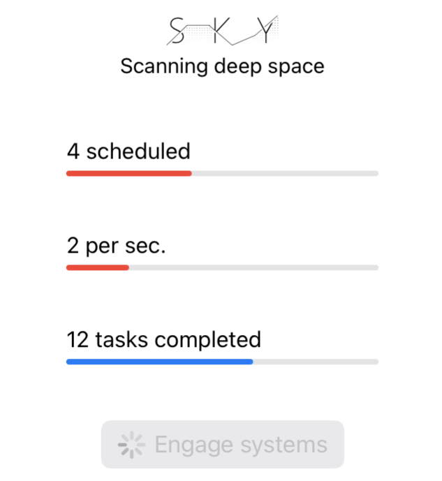
You continuously remain at four scheduled tasks because, as soon as one completes, you schedule a new one in its place.
The second indicator, however, shows that you advance the total amount of work by only two (or however many you saw before) tasks per second. That matches what you established earlier in the chapter — namely, that the Swift runtime “gives” your group a device-specific number of threads to run concurrent tasks on.
Congratulations, your new concurrent code works exactly as expected!
Running code after all tasks have completed¶
Oftentimes you’d like to do some cleanup, update the UI or do something else after you run a group.
In your current project, you’d like to reset some indicators to not confuse the user when the scan is over.
You could always use TaskGroup.waitForAll() to wait on all the tasks, then add the cleanup code.
But in your current runAllTasks() implementation, you already wait for all the tasks to complete. As mentioned, the for await loop will only end when the group runs out of tasks.
So all you need to do is to add this code directly after the last loop in runAllTasks():
await MainActor.run {
completed = 0
countPerSecond = 0
scheduled = 0
}
This sets the three indicators in the UI to zero at the end of the scan.
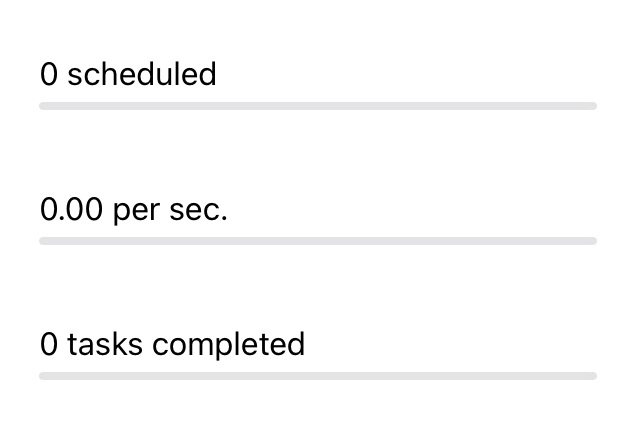
Easy! Now on to a more painful topic: error handling.
Group error handling¶
So far, running scans has been a walk in the park. ScanTask never fails and always completes its heavy-duty work on time.
That will change in this section! ScanTask.run() will fail now and then, and you’ll have to cope with the consequences.
Open ScanTask.swift and scroll to run(). First, make the method throwing by adding the throws keyword to its definition:
func run() async throws -> String {
Thrown errors move upward toward the calling code. You’ll need to track that path back to fix the compiler errors, which will help you visualize where the errors go. Before you leave, though, add this line at the top of the method:
try UnreliableAPI.action(failingEvery: 10)
The starter project includes UnreliableAPI, which simply throws an error every few calls so you can test some error handling scenarios.
Now that you’re producing errors, you need to handle them. The code that calls run() now fails to compile because it’s not using the try keyword.
Open ScanModel.swift and fix the compiler error in worker(number:) by adding try:
let result = try await task.run()
The next step is to modify the declaration of worker(number:) to also include throws:
func worker(number: Int) async throws -> String {
Then, scroll to runAllTasks() and add try to the two calls to worker(number:):
try await self.worker(number: index)
You now have throwing tasks, so you have to update the task group to also be a throwing one. Update the group creation call with the throwing variant withThrowingTaskGroup like so:
try await withThrowingTaskGroup(of: String.self) { [unowned self] group in
Finally, group is now a ThrowingTaskGroup, so you must also update the for await loop :
for try await result in group {
The project now compiles once more. Build and run. Tap Engage systems and observe the app. Right around the time you see the completed task indicator go up to ten, the execution stops:
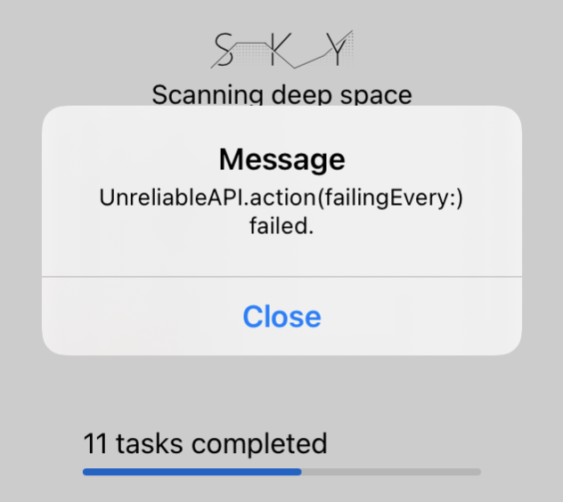
You don’t catch errors anywhere in your model, so the error bubbles up and out of the group. The starter code in SkyApp.swift catches the error and presents it on-screen.
The result of this behavior is that, when one of your tasks throws, it “breaks” the whole group. Not only do further tasks not execute, you also don’t get the results of the ones that have already completed.
In the next section, you’ll redesign your code to ignore failing tasks and to collect the results of all the tasks that successfully return.
Using the Result type with TaskGroup¶
To handle errors safely, you won’t throw an error; instead, you’ll use the Result type. If you haven’t used Result before, it’s a simple Swift enum with the following two cases:
- success(Value): With an associated result.
- failure(Error): With an associated error.
Open ScanModel.swift and scroll to worker(number:) and change the method definition to avoid throwing errors and return a Result value instead:
func worker(number: Int) async -> Result<String, Error> {
This upsets the compiler. To make it happy again, start by replacing return result with:
return .success(result)
Then, replace the throwing line let result = try await task.run() with:
let result: String
do {
result = try await task.run()
} catch {
return .failure(error)
}
Here, you call run(), as you did before. But this time, you catch any errors and safely return failure instead.
Changing the return type threw some other compiler errors, which you’ll now fix.
In runAllTasks(), you need to change the group return type from String to Result<String, Error>. Make that change on the line of withThrowingTaskGroup(of: String.self) so it looks like this:
withThrowingTaskGroup(of: Result<String, Error>.self)
That changes the group to expect a Result from each task; it also clears the compile errors. However, some warnings are still left, so you need to change the two occurrences of try await self.worker(number: index) back to:
await self.worker(number: index)
Sweet! Build and run. Tap Engage systems. Now, the app works through all the tasks, skipping over any that fail.
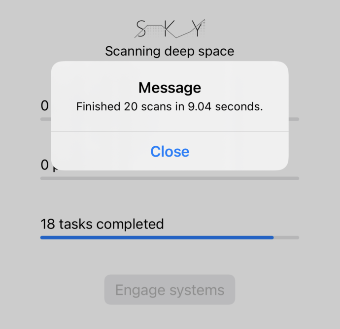
Note how the alert box says you worked through 20 scan tasks, but the lowest indicator shows that 18 tasks actually finished. The difference between the two results is the number of tasks that failed.
Now, you only need to take care of the logs. Right now, you print the raw Result description, which is a bit untidy:
Completed: success("5")
Completed: success("7")
Completed: success("6")
Completed: failure(Sky.UnreliableAPI.Error())
Completed: success("8")
Completed: success("10")
Scroll to print("Completed: \(result)") and replace it with:
switch result {
case .success(let result):
print("Completed: \(result)")
case .failure(let error):
print("Failed: \(error.localizedDescription)")
}
Build and run. Scan again, and you will have a nicer looking log:
Completed: 5
Completed: 6
Completed: 7
Failed: UnreliableAPI.action(failingEvery:) failed.
Completed: 10
Completed: 8
Completed: 12
And that’s a wrap! You’ve now learned a ton about using TaskGroup and its flexibility and power.
But your search for alien life isn’t over! In Chapter 10, “Actors in a Distributed System”, you’ll increase your scanning power by adding new code to Sky to allow it to take over other devices on the network. This means it will perform its scans in a sort of… SkyNet. I’m sure “you’ll be back” to read that one!
Key points¶
- To run an arbitrary number of concurrent tasks, create a task group. Do this by using the function
withTaskGroup(of:returning:body:). For a throwing task group, usewithThrowingTaskGroup(of:returning:body:). - You can add tasks to a group by calling
addTask(priority:operation:)oraddTaskUnlessCancelled(priority:operation:). - Control task execution by canceling the group via
cancelAll()or waiting for all tasks to complete withwaitForAll(). - Use the group as an asynchronous sequence to iterate over each task result in real time.